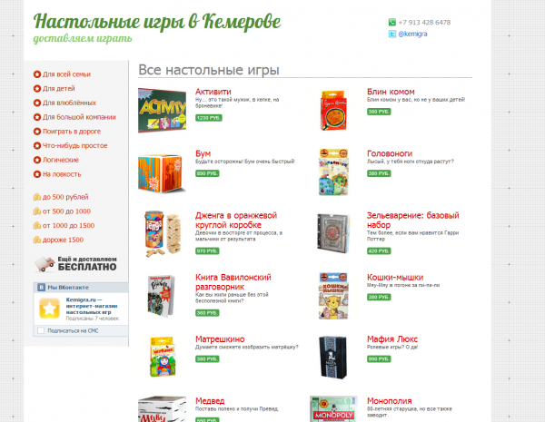

Идея поторговать чем-нибудь в интернете сидела в моей голове, наверное, лет 10. С азами торговли я кое-как был знаком, в детстве возил с Новосибирска жувачки-шоколадки, потом даже с братом имели киоск с канцтоварами на Октябрьском 53/2. Детство прошло, киоск надоел. С азами интернета, тем временем, тоже кое-как познакомился, даже завёл аккаунт в твиттере.
Идей чем торговать, даже лет 10 назад, была, конечно, масса. Но трезвый взгляд подсказывал, что рынок до интернет-торговли ещё не созрел. Кемеровчане интернет-магазинов стеснялись и тратили деньги преимущественно в оффлайне. Торговать в интернете 8-10 лет назад в Кемерове, это как торговать в интернете сегодня, к примеру, в посёлке Ижморском.
Несмотря на это пробы электронной торговле в столице нашей малой родины были. В лице того же первого самого первого универсама. Не уверен были ли у них в принципе клиенты, сколько-то наверное было, но мучительно медленное закрытие электронной лавочки подтвердило мысли о преждевременности подобного бизнеса в нашем мегаполисе.
Потом стали появляться первый ростки. В интернет выдвинулись службы доставки продуктов питания. Поначалу это были «Обеды в офис», потом пиццы, потом стали появляться в оффлайне, одновременно попадая и в онлайн, неместные суши, за ними поторопились и местные.
Клиент перестал пугаться и стал пользоваться. К тому времени наиболее продвинутые кемеровчане вовсю закупались на озонах и прочих ебэях. Кемеровская интернет-торговля, кажется за одним исключением, так и не вышла за рамки узкоспециализированного киоска. В качестве исключения могу привести интернет-магазин товаров для семьи family-click.ru, с владельцами которого мне тоже случилось быть знакомым.
Каждый раз получая книжки из «Лабиринта» или забирая пришедшую из Китая посылку со всякими китайскими «нужными» штуками, я вспоминал про идею попробовать интернет-торговлю на вкус своими руками.
В новогодние праздники мне окончательно надоело вспоминать и я за пару дней сделал небольшой интернет-магазин. В качестве товара выбрал интересные для себя, и, как мне кажется, не менее интересные для окружающих настольные игры. Следовательно и магазин так и назвал «Настольные игры в Кемерово». Их (игр), за последнее десятилетие, появилось огромное множество.
Функционал интернет-магазина намеренно не стал усложнять. Вообще люблю когда проект хоть как-то работает с самого начала. В нём пока нет корзины, пока нельзя отслеживать историю покупок, нет личного кабинета, нельзя заплатить за игру с помощью пластиковой карты. Всё (возможно) в будущем. Зато уже сегодня есть почти три десятка отличных игр и энтузиаст-продавец средних лет.
Почти сразу после праздников я анонсировал интернет-магазин у себя в твиттере и на форуме Кемеровского городского сайта.
В качестве первой рекламы сделал пару баннеров для keminfo.ru и разместил рекламный модуль в газете «Город», вышедшей в прошлый понедельник. Завёл аккаунт в твиттере, создал группу во «Вконтакте». Потихоньку буду пробовать и другие способы продвижения.
Этот пост, конечно, был бы неполным, но вчера я уже отвёз игру первой покупательнице. «Мафию Люкс» купила женщина, живущая на улице 13-ая линия, дом (в общем в самом конце дом). Мягко говоря «для бешеного интернет-продавца 28 километров не крюк». Но разве это может сравниться с радостью, которую я принёс в далёкий частный дом 990 рублями.
Игры на сайте представлены самые разные. Со временем их ассортимент, надеюсь, будет расширяться. Пока же хожу смотрю на коробки, хочется поиграть во всё, но что это тогда будет за бизнес? :)
